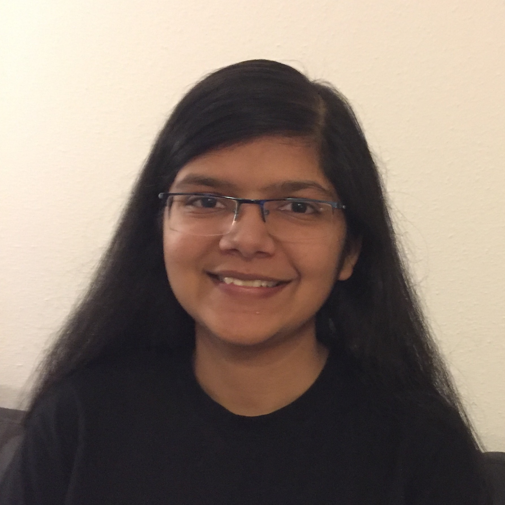

Course Overview
This course provides an introduction to machine learning and statistical pattern recognition. We will cover approaches for supervised learning (linear models, kernel methods, decision trees, neural networks) and unsupervised learning (clustering, dimensionality reduction), as well as theoretical foundations of machine learning (learning theory, optimization). Evaluation will consist of mathematical problem sets and programming projects covering a variety of real-world applications.
Prerequisites
This course is intended for graduate students and qualified undergraduate students with a strong mathematical and programming background. Undergraduate level training or coursework in algorithms, linear algebra, calculus, probability, and statistics is suggested. A background in programming will also be necessary for the problem sets; students are expected to be familiar with python or learn it during the course. At CMU, this course is most similar to MLD's 10-601 or 10-701, though this course is meant specifically for students in engineering.
Textbooks
There will be no required textbooks, though we suggest the following to help you to study (all available online):- (KM): Machine Learning: A Probabilistic Perspective, Kevin Murphy. Online access is free through CMU’s library. Note that to access the library, you may need to be on CMU’s network or VPN.
- (ESL): Elements of Statistical Learning Trevor Hastie, Robert Tibshirani and Jerome Friedman.
- (TM): Machine Learning, Tom Mitchell.
- (CIML): A Course in Machine Learning, Hal Daumé III.
Piazza
We will use Piazza for class discussions. Please go to this Piazza website to join the course forum (note: you must use a cmu.edu email account to join the forum). We strongly encourage students to post on this forum rather than emailing the course staff directly (this will be more efficient for both students and staff). Students should use Piazza to:
- Ask clarifying questions about the course material.
- Share useful resources with classmates (so long as they do not contain homework solutions).
- Look for students to form study groups.
- Answer questions posted by other students to solidify your own understanding of the material.
Staff Contact Info
TAs:
| Zifan Wang (SV) | zifanw@andrew.cmu.edu | |
| Ethan Ruan (SV) | yichenr@andrew.cmu.edu | |
| Jinhang Zuo (SV) | jzuo@andrew.cmu.edu | |
 |
Kashish Garg (Pitt) | kgarg@andrew.cmu.edu |
| Boyue Li (Pitt) | boyuel@andrew.cmu.edu | |
| Nikhil Rangarajan (Pitt) | nrangara@andrew.cmu.edu |
Grading Policy
Grades will be based on the following components:
- Problem Sets (40%): There will be 6 problem sets. Each
each problem set will have equal weight.
- Late submissions will not be accepted.
- There is one exception to this rule: You are given 2 “late days” (self-granted 24-hr extensions) which you can use to give yourself extra time without penalty. At most one late day can be used per assignment. This will be monitored automatically via Gradescope.
- Students can drop their lowest grade (i.e., only the top 5 grades will count).
- Solutions will be graded on both correctness and clarity. If you cannot solve a problem completely, you will get more partial credit by identifying the gaps in your argument than by attempting to cover them up.
- Midterm (25%), Final (35%): These in-person exams will cover material from the lectures and the problem sets.
- Bonus: On Piazza, the top student “endorsed answer” answerers can earn bonus points.
Gradescope: We will use Gradescope to collect PDF submissions of each problem set. Upon uploading your PDF, Gradescope will ask you to identify which page(s) contains your solution for each problem – this is a great way to double check that you haven’t left anything out. The course staff will manually grade your submission, and you’ll receive feedback explaining your final marks.
Regrade Requests: If you believe an error was made during grading, you’ll be able to submit a regrade request on Gradescope. For each homework, regrade requests will be open for only 1 week after the grades have been published. This is to encourage you to check the feedback you’ve received early!Academic Integrity Policy
Group studying and collaborating on problem sets are encouraged, as working together is a great way to understand new material. Students are free to discuss the homework problems with anyone under the following conditions:- Students must write their own solutions and understand the solutions that they wrote down.
- Students must list the names of their collaborators (i.e., anyone with whom the assignment was discussed).
- Students may not use old solution sets from other classes under any circumstances, unless the instructor grants special permission.
Using LaTeX
Students are strongly encouraged to use LaTeX for problem sets. LaTeX makes it simple to typeset mathematical equations, and is extremely useful for graduate students to know. Most of the academic papers you read were written with LaTeX, and probably most of the textbooks too. Here is an excellent LaTeX tutorial and here are instructions for installing LaTeX on your machine.
Acknowledgments
This course is based in part on material developed by Fei Sha, Ameet Talwalkar, Matt Gormley, and Emily Fox. We also thank Anit Sahu and Joao Saude for their help with course development. The first version of the course was offered in fall 2018.
Schedule (Subject to Change)
| Date | Topics | Reading | HW |
|---|---|---|---|
| 8/27 | Introduction | KM, Ch. 1 | |
| 8/29 | Probability and Linear Algebra Review | TM, Estimating Probabilities KM, Ch. 2 (for a refresh in probability) |
|
| 9/3 | Linear Algebra Review and Least Squares |
Math4ML (review/refresher)
Vectors, Matrices, and Least Squares |
HW 1 released |
| 9/5 | Linear Regression, Part I | KM, Ch. 7.1-7.3 Deep Learning Book, Ch. 5* |
|
| 9/10 | Linear Regression, Part II | KM, Ch. 7.4-7.6 Intro to regression |
HW 1 due |
| 9/12 | Evaluating ML Models | Deep Learning, Ch. 5.2-5.4 KM, Ch. 6.4 |
HW 2 released |
| 9/17 | Naive Bayes | CIML, Ch. 9 KM, Ch. 3.5 |
|
| 9/19 | Logistic Regression | KM, Ch. 8.1-8.4, 8.6 Discriminative vs. Generative |
|
| 9/24 | Multiclass Classification | KM, Ch. 8.5 | HW 2 due HW 3 released |
| 9/26 | SVM, Part I | ESL, Ch. 12 KM Ch. 14.5 Kernel Methods |
|
| 10/1 | SVM, Part II |
Duality Supplement Idiot's Guide to SVM |
|
| 10/3 | Nearest Neighbors | CIML, Ch. 3.1-3.2 | HW 3 due |
| 10/8 | In-Class Midterm | ||
| 10/10 | Decision Trees | CIML, Ch. 1.3 KM, Ch. 16.2 ESL, Ch. 9.2 |
HW 4 released |
| 10/15 | Ensemble Methods | KM, Ch. 16.4 |
|
| 10/17 | Neural Networks, Part I | Learning Deep Architectures for AI ImageNet |
|
| 10/22 | Neural Networks, Part II | Neural Networks and Deep Learning, Ch.3 Regularization for Deep Learning |
HW 4 due |
| 10/24 | Neural Networks, Part III | RNN LSTM |
|
| 10/29 | Clustering, Part I | CIML, Ch. 15.1 | |
| 10/31 | Clustering, Part II | ESL, Ch. 14.3.1-14.3.9 | |
| 11/5 | Tensorflow/TBD | ||
| 11/7 | EM | KM, Ch. 11.1-11.5 | |
| 11/12 | Dimensionality Reduction | PCA Independent Component Analysis |
|
| 11/14 | Guest Lecture (TBD) | ||
| 11/19 | Online Learning | Introduction to Online Learning | |
| 11/21 | Reinforcement Learning | ||
| 11/26 | Guest Lecture (TBD) | ||
| 11/28 | No class (Thanksgiving) | ||
| 12/3 | Guest Lecture (TBD) | ||
| 12/5 | Final Lecture - Review |
||
| TBD | Final Exam |